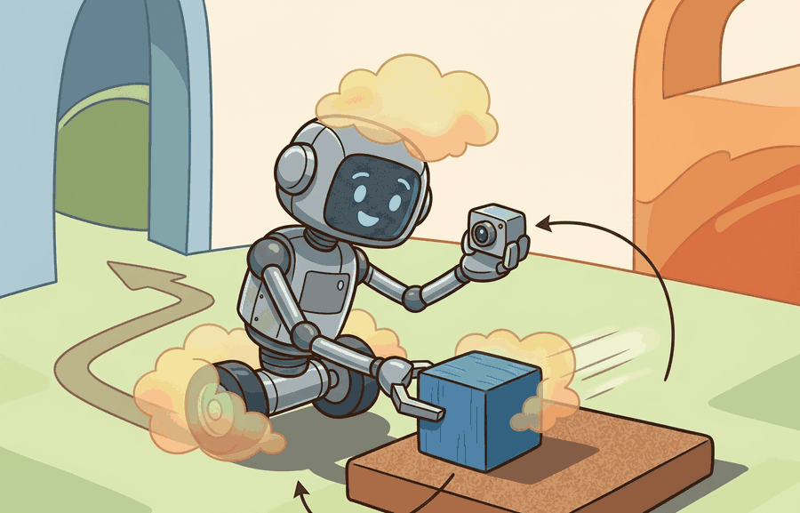

A robust robot is not the one that never sees surprise, it is the one that notices surprise early enough to act differently.
A Runtime Monitoring Engineer
A surgical robot rates every candidate incision at 91% confidence, yet only 62% of those incisions would hit the target. The threshold meant to halt the arm never fires, because the confidence score is always above it. The robot is not broken; it is miscalibrated. As embodied systems move from controlled labs into hospitals, warehouses, and public streets, the gap between stated confidence and actual accuracy becomes a safety variable. This section develops the tools to measure that gap, close it with temperature scaling and isotonic regression, and design runtime gates whose thresholds mean something.

This section assumes familiarity with the disturbance taxonomy and failure modes introduced in section 53.1, particularly the distinction between sensor noise, covariate shift, and concept drift. The calibration tools developed here feed directly into section 53.3, where calibrated confidence scores become the basis for out-of-distribution detection thresholds, and into section 53.4, where they supply the uncertainty health signal that drives runtime state transitions.
Why This Matters
Model uncertainty and calibration is useful only when it distinguishes disturbance sources and ties them to specific corrective actions. Robustness is not one scalar, it is a map from perturbation class to degraded behavior, detection delay, and residual risk.
To see why calibration matters in practice: imagine a robot arm that assigns 0.92 confidence to every candidate grasp, but only 68% of those grasps actually succeed. A runtime gate set at a 0.85 threshold will never trigger, because the raw confidence is always above it regardless of true difficulty. The robot proceeds confidently into failure after failure. The issue is not that the model is wrong on average; it is that the confidence scale has decoupled from the empirical success rate, so no threshold can separate good grasps from bad ones. Calibration is the correction that re-couples the scale to reality, and this decoupling is called the confidence-accuracy gap.
In embodied AI this gap carries physical consequences. A robot arm acting on miscalibrated scores cannot self-correct through repeated attempts: each failed grasp risks damaging fragile parts, displacing the target object, or exhausting a narrow time window. On legged platforms, a miscalibrated terrain-safety score can commit the robot to a foothold from which it cannot recover. The physical world does not allow confidence values to correct themselves through backpropagation.
The gap arises because neural networks are trained to maximize class separation, not probability accuracy. A sigmoid or softmax output that reliably ranks options can still saturate near 0 or 1 because cross-entropy loss rewards correct orderings, not correct magnitudes. Larger, deeper networks amplify this effect (Guo et al., 2017). Post-hoc methods such as temperature scaling divide the logits by a learned scalar before the softmax, compressing overconfident outputs back toward the empirical success rate without changing the ranking.
A standard calibration statistic is the expected calibration error (ECE) $$\mathrm{ECE} = \sum_{b=1}^{B} \frac{|S_b|}{n}\, |\mathrm{acc}(S_b) - \mathrm{conf}(S_b)|,$$ where $S_b$ is the set of predictions whose confidence falls in bin $b$. In embodied systems, calibration should be evaluated on action-relevant predictions, not only class labels.
Think of a kitchen scale that always shows items in the correct order of heaviness (the bag of flour is heavier than the apple) but whose dial reads 30% too high across the board. The ranking is perfect, yet every recipe that calls for "250 g of flour" will be wrong because the printed number cannot be trusted as an absolute quantity. Cross-entropy training gives a neural network that same property: it learns to rank options reliably, but the softmax output saturates toward 0 or 1 because the loss only rewards putting the correct option on top, not placing it at the right numerical probability. Calibration is the correction that re-marks the dial so the number you read actually matches the weight in the bowl.
An uncertainty signal can have the right ordering but the wrong scale. Calibration is what makes the scale actionable for a threshold, an intervention rule, or a planner cost.
- Choose the prediction interface that matters for action, such as grasp success probability or collision-free path confidence.
- Collect held-out or replayed episodes with prediction confidence and empirical outcome.
- Compute calibration summaries such as ECE, reliability bins, and threshold-conditioned precision.
- If needed, fit a calibration map on one panel and test it on a separate shifted panel.
- Use the calibrated confidence only if it remains stable under the deployment shifts you care about.
Worked Example
A manipulation policy may be good at ranking candidate grasps yet still overclaim 0.95 confidence on cases that succeed only 0.70 of the time. A runtime gate built on that confidence will intervene too late.
predictions = [
{"confidence": 0.9, "correct": 1},
{"confidence": 0.8, "correct": 1},
{"confidence": 0.8, "correct": 0},
{"confidence": 0.6, "correct": 1},
{"confidence": 0.55, "correct": 0},
{"confidence": 0.95, "correct": 1},
]
def binned_ece(preds, n_bins=10):
"""Proper binned ECE: sum over bins of (n_b / N) * |accuracy_b - confidence_b|."""
N = len(preds)
edges = [i / n_bins for i in range(n_bins + 1)]
ece = 0.0
for i in range(n_bins):
lo, hi = edges[i], edges[i + 1]
in_bin = [p for p in preds if lo < p["confidence"] <= hi or (i == 0 and p["confidence"] == 0.0)]
if not in_bin:
continue
n_b = len(in_bin)
acc_b = sum(p["correct"] for p in in_bin) / n_b
conf_b = sum(p["confidence"] for p in in_bin) / n_b
ece += (n_b / N) * abs(acc_b - conf_b)
return ece
ece = binned_ece(predictions)
print({"n_predictions": len(predictions), "binned_ece": round(ece, 4)}){'n_predictions': 6, 'binned_ece': 0.15}Expected output: The small gap here suggests the average scale is close, but a real evaluation would still inspect bins because cancellation can hide local miscalibration. Calibration is about the full reliability shape, not only the mean.
On a Franka Panda manipulation stack, Torchmetrics computes binned ECE inside the PyTorch evaluation loop that replays logged grasp episodes; scikit-learn's isotonic regression then fits the calibration map on 500 held-out grasps from the target bin before any threshold is written into the ROS 2 action server. MAPIE-style conformal wrappers extend this to coverage-guaranteed abstention: if the conformal set for a push primitive contains more than one action candidate, the robot returns to a safe home pose rather than committing. On a Boston Dynamics Spot inspection route, the same pipeline runs at 10 Hz against the onboard perception stack, where a 50 ms calibration-lookup latency is the accepted budget before the navigation costmap is updated.
Concrete stack anchors for this chapter include PyTorch or JAX evaluation loops for saving logits and uncertainty heads, OpenCV or Open3D replay tools for checking perception-linked failures, Torchmetrics and scikit-learn for calibration analysis, MAPIE or related conformal wrappers for thresholding, Weights & Biases or TensorBoard dashboards for reliability diagrams, and ROS 2 diagnostics when the calibrated signal gates a real runtime action.
| Tool | Role | Audit Question |
|---|---|---|
| Torchmetrics | Fast ECE, binning, and confidence summaries inside PyTorch evaluation loops. | Is the metric attached to the prediction that actually changes the robot's action? |
| scikit-learn | Calibration curves, isotonic regression, and threshold sweeps. | Was the calibration split frozen before deployment outcomes were inspected? |
| MAPIE-style conformal wrappers | Coverage-style intervals and abstention sets. | Does coverage remain acceptable on the shifted panel, not only on the clean split? |
Real deployments have made calibration gaps visible and costly. Waymo's public safety reports (2020 onward) show that raw perception confidence scores were systematically overconfident on rare object classes such as cyclists in low light. Engineers had to recalibrate those scores against field outcomes before using them to gate disengagement decisions. The RT-2 vision-language-action model (Brohan et al., 2023) revealed the same pattern in tabletop manipulation. The model predicted 0.9+ success on tasks where the new environment produced empirical success closer to 0.55. That gap invalidated every threshold-based safety monitor until teams applied isotonic regression on a held-out set from the target domain. Both cases share the same structure: the model ranks options correctly, but its absolute confidence scale is wrong, so any fixed threshold either fires constantly or never fires.
In embodied systems, calibration must be tied to consequences. A poorly calibrated collision predictor and a poorly calibrated object classifier are not equally serious if only one gates a safety-critical maneuver. In practice, teams often compare temperature scaling, isotonic regression, and conformal intervals on the exact signal that drives a stop, reroute, or human-review threshold.
The implementation contract is simple: the confidence value in the PyTorch or JAX tensor must be the same signal logged in the replay artifact, plotted in Weights & Biases or TensorBoard, and consumed by the ROS 2 gate. A calibration curve that is detached from the deployed threshold is analysis theater, not safety evidence.
A frequent failure is to calibrate on clean validation data and deploy on shifted scenes. The confidence scale then looks disciplined in the notebook and collapses in the field.
When using scikit-learn's CalibratedClassifierCV, the default cv='prefit' path fits the calibration map on whatever split you pass in, but the default cv=5 path fits entirely on training folds, so the resulting reliability curve is measured on the same distribution the model already saw. Always construct a separate calibration split drawn from target-domain episodes, pass it via cv='prefit', and freeze that split before inspecting outcomes. If you are using MAPIE, prefer SplitConformalClassifier over cross-conformal variants for deployment calibration: cross-conformal aggregates across folds from the training domain and will report optimistic coverage on any shifted scene that does not appear in those folds.
Calibrating on your clean lab dataset and then deploying in the wild is a bit like rehearsing a speech in a quiet room and then discovering the venue is a busy airport: everything was perfectly tuned to conditions that no longer exist. The confidence score arrives at the gate looking immaculate and is immediately wrong.
Project Ideas
Grasp confidence calibrator (beginner, weekend): Using a Gymnasium pick-and-place environment with MuJoCo (or PyBullet as of 2022, though MuJoCo is now the standard backend), log raw softmax confidence and binary grasp success over 500 rollouts, then fit temperature scaling with scikit-learn and plot the before/after reliability diagram to see the gap close. The key challenge is constructing a clean calibration split that does not overlap the training episodes so the corrected scale generalises rather than just memorising the training distribution.
Runtime uncertainty gate for a manipulation policy (intermediate, 1-2 weeks): Wrap a LeRobot or ROS2-connected Franka policy with a calibrated abstention layer that publishes a safe_to_execute topic: if the conformal prediction set for the next action contains more than one candidate, the gate sends the arm to a home pose instead of committing. The key challenge is keeping the calibration map consistent across sim-to-real domain shift, which requires collecting a held-out calibration set from real-robot replays rather than from simulation alone.
Cross-References
This section connects to Section 53.3 on out-of-distribution (OOD) detection and Section 54.4 on shielded policies, where calibrated thresholds become actual intervention logic.
Log confidence and outcome for one embodied prediction task, compute a reliability diagram, then decide whether you trust a threshold to trigger degraded mode or human review.
Do not calibrate confidence on a proxy metric that the action policy never uses. The only calibration that matters is the calibration of the signal tied to a real decision.
A common assumption is that a model with high classification accuracy is also well-calibrated, treating accuracy and calibration as the same property. They are not. A model can rank options correctly and achieve 95% accuracy while assigning 0.95 confidence to predictions that succeed only 65% of the time. In embodied AI this matters because runtime safety gates are triggered by the absolute confidence value, not by rankings: a miscalibrated but accurate model will still have a confidence scale that renders any fixed threshold either always active or never active. The correct mental model is that accuracy measures whether the top-ranked prediction is right, while calibration measures whether the stated probability matches the empirical frequency, and only the latter property makes a threshold meaningful for halting or rerouting a physical agent.
For a self-driving perception stack, calibration may matter most for occupancy or collision probability, not for semantic class labels that have no immediate control effect.
Conformal prediction for embodied action sequences (2024-2026). Standard ECE calibration is per-step, but robot tasks unfold over horizons of tens to hundreds of steps. Sequence-level conformal methods that guarantee coverage over entire trajectory segments -- rather than individual predictions, are an active area. The CCCP framework (Lindemann et al., 2024, "Conformal Prediction for STL Runtime Verification of Deep Neural Networks") extends split conformal guarantees to temporal logic specifications, giving a mathematically grounded way to certify that a manipulation sequence meets a safety specification with a user-chosen coverage level. The open problem is how to maintain valid coverage when the calibration set and deployment distribution shift simultaneously, as happens in sim-to-real transfer.
How many of the calibration tools available today were designed for single-step predictions? Almost all of them. Yet a manipulation sequence can span 50 to 200 action steps, and a per-step ECE of just 0.05 compounds into a coverage gap that invalidates the safety certificate long before the task completes. Concretely, a 95% per-step coverage guarantee degrades to roughly 7% coverage after 200 steps (0.95200 ≈ 0.07), meaning the "safe" certificate is violated nine times out of ten by the time the robot finishes a standard pick-and-place horizon.
Calibration of diffusion-based and flow-matching policies (2024-2026). Imitation learning policies based on diffusion (e.g., Diffusion Policy, Chi et al., 2023 / extended benchmarks 2024-2025) and flow matching (Pi0, Black et al., 2024) output action distributions rather than point estimates, so the standard scalar confidence framing no longer applies. Research groups at Stanford, Berkeley, and CMU are developing density-calibration metrics that ask whether the probability mass a diffusion policy assigns to a region of action space matches the empirical success rate of actions sampled from that region. No consensus benchmark or toolchain has stabilized yet, making this an approachable entry point for a PhD project.
Foundation-model uncertainty quantification under distribution shift (2024-2026). Large vision-language-action models such as OpenVLA (Kim et al., 2024) inherit calibration from internet-scale pretraining but are fine-tuned on narrow robot datasets. Recent work (e.g., RT-2-X and its successors) shows that fine-tuning can sharply degrade calibration on out-of-distribution objects even when task accuracy improves. Google DeepMind and Toyota Research Institute have published internal evaluations showing confidence-accuracy gaps above 0.30 on novel object classes after fine-tuning, motivating lightweight post-hoc recalibration pipelines that can run on-robot without retraining the full backbone.
Open problem for PhD students. There is currently no agreed protocol for evaluating sequence-level calibration in long-horizon manipulation: how many steps form a meaningful calibration window, how to handle variable-length tasks, and how to ensure the calibration split does not leak future observations into the calibration map. A student who formalizes this evaluation protocol and runs it across three or more open manipulation benchmarks (e.g., LIBERO, RLBench, DROID) would fill a genuine gap in the field.
Can you explain why an accurate but miscalibrated confidence head can still be dangerous in deployment? If not, connect the threshold choice to a missed or false intervention.
Calibration turns uncertainty from a descriptive score into a decision-support signal that can safely trigger thresholds and fallbacks.
Take one model output from your own stack and define how you would test whether its confidence is calibrated enough to drive a runtime threshold.
Section References
Guo, C. et al. "On Calibration of Modern Neural Networks." (2017). https://arxiv.org/abs/1706.04599
A standard reference for calibration evaluation and post-hoc adjustment.
Ovadia, Y. et al. "Can You Trust Your Model’s Uncertainty? Evaluating Predictive Uncertainty Under Dataset Shift." (2019). https://arxiv.org/abs/1906.02530
Calibration under shift is the real embodied challenge.
Section 53.3 continues by asking how to detect states that should not be trusted at all because they lie outside the supported distribution.